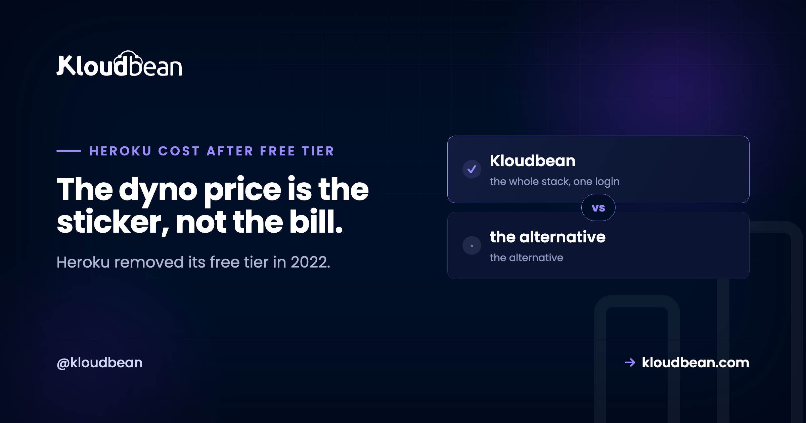
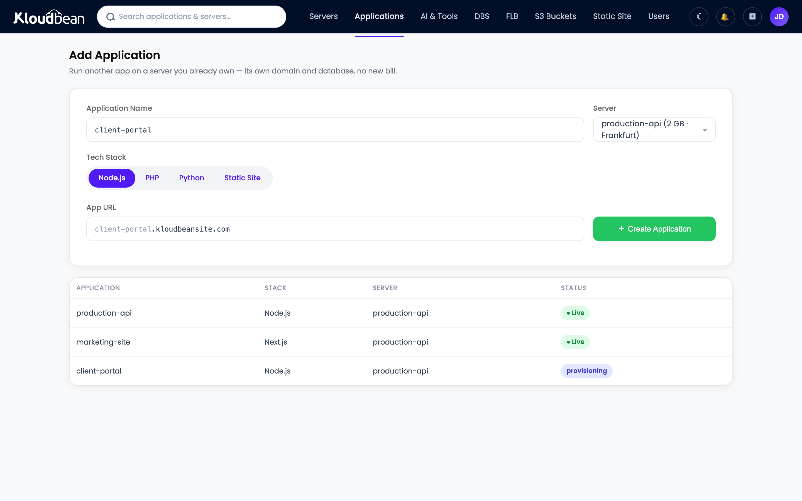

Heroku Costs After the Free Tier: What You'll Actually Pay in 2026

If you're asking what Heroku costs after the free tier, the short version is that the free tier is gone and has been since late 2022, so the real question is what a production Node.js app costs once it's more than one dyno. And that's where people get surprised. A single web dyno looks cheap. Add a background worker, a Postgres database, Redis, and a staging copy, and you're suddenly paying for five separately priced things. Here's the honest breakdown, why the total climbs faster than your traffic, and when a flat-priced stack works out cheaper.
Heroku removed free dynos, free Postgres, and free Redis on November 28, 2022. The cheapest paid options are Eco (around $5/mo for a pool of shared dyno hours) and Basic (around $7/mo per dyno), per Heroku's published usage docs. But a real app rarely stops there: a web dyno, a worker, a database, Redis, and a staging environment are each billed separately, so the practical monthly cost climbs quickly. Budget the whole stack, not one dyno.
Wait, is there still a Heroku free tier?
No. Heroku discontinued its free dynos, free Postgres, and free Key-Value Store (Redis) plans starting November 28, 2022, saying the change followed the effort of managing fraud and abuse on free resources. Old free apps were moved to Eco dynos that scale to zero, and personal free databases were slated for deletion unless upgraded. The cheapest paid tiers today are Eco and Basic. So if you learned Heroku in its free-tier heyday, the mental model to update is simple: there's no zero-cost path anymore, only cheaper and more expensive paid ones.
What a real Heroku app actually costs
Heroku prices each moving part on its own. That's fine when you have one part. Most production apps have several. Per Heroku's published usage docs, the approximate monthly figures look roughly like this (prices change, so treat these as ballpark, not a quote):
| Component | Approx. monthly (per Heroku's usage docs) |
|---|---|
| Eco dynos (shared pool of hours) | ~$5 |
| Basic dyno | ~$7 |
| Standard-1X dyno | ~$25 |
| Standard-2X dyno | ~$50 |
| Performance-M dyno | ~$250 |
| Performance-L dyno | ~$500 |
| Heroku Postgres / Redis / add-ons | Priced separately, on top |
Now assemble a normal app. A web dyno to serve traffic. A worker dyno for background jobs, because you don't want slow tasks blocking requests. A Postgres database. A Redis instance for a queue or cache. A staging environment so you're not testing in production. Each is its own line. That's the pattern developers describe again and again: they start with one dyno at an acceptable price, then the app needs a worker, a database, Redis, and staging, and the final number feels out of proportion to the traffic. As reviewers put it, the pricing "adds up very quickly" and "gets prohibitively expensive once you scale past the experimentation phase."
Why the bill climbs faster than your traffic
Two things drive it. First, everything is a separate SKU. A web process and a worker are two paid dynos even if both are tiny. Staging doubles parts of the stack. Add-ons stack on top. Second, dyno classes jump in big steps. A memory-hungry Node process (an AI workload, image processing, a fat dependency tree) can push you from a Standard dyno to a Performance dyno, and that's a large single leap rather than a gentle nudge. Developers have called the cost of workers with adequate memory "exorbitant" and the plan limits "rigid." None of that means Heroku is doing anything shady. It's real metered infrastructure. It's just priced per-piece, so a modest app made of several pieces adds up.
The 2026 context: sustaining engineering
There's a strategic wrinkle worth naming plainly. In February 2026, Heroku announced a move to a "sustaining engineering" model focused on stability, security, reliability, and support rather than new features. Heroku says it remains supported and production-ready, and that's the accurate framing. It isn't shutting down. But if you're choosing where to start a brand-new project in 2026, "stable but not adding features" is a fair thing to weigh against platforms that are actively shipping. Some developers read the announcement and decided greenfield work belongs elsewhere. That's a judgment call, not a verdict.
The flat-stack alternative
The reason a Heroku bill surprises people is per-piece pricing. Flip that to a flat plan and the surprise mostly goes away. On Kloudbean your Node app, its background worker, a managed database, and Redis live in one dashboard on one predictable plan that starts at $8/mo, rather than five separate meters. The app runs always-on under PM2, deploys come from a GitHub push, and there's no egress metering to blow up the total. If you're moving off Heroku, the migration help is included.
The honest boundary, because it matters: Heroku's git-push-and-it-deploys simplicity is genuinely excellent, and that's why people loved it. And moving off Heroku is not automatically cheaper. There are documented cases where a migration's first month cost more than the old Heroku bill, because people move for control, roadmap, or flexibility as much as price. Consolidating a multi-piece stack onto one flat plan is where the savings usually show up, so do the math on your whole stack, not one dyno.
| Heroku (per-piece) | Kloudbean (flat stack) | |
|---|---|---|
| Web app | Dyno, billed per class | Always-on under PM2 |
| Background worker | Separate paid dyno | Runs on the same server |
| Database | Separate add-on | Managed DB in the same dashboard |
| Redis / cache | Separate add-on | Managed Redis, same dashboard |
| Egress | Metered | Not metered |
| Cost shape | Several meters, climbs with pieces | Flat, from $8/mo |

How heroku Costs After the Free Tier connects to everything else
If Heroku's cost is what's pushing you, it's worth seeing the wider picture. A Heroku alternative for modern apps covers the move in depth, where to deploy a Node.js app lays out every option, and managed PostgreSQL hosting explains the database side. Curious how metered platforms compare? Why is my Railway bill so high and Render vs Railway vs Kloudbean are useful cost reads.
Put your whole stack on one flat bill.
Run your Node app, worker, managed database, and Redis in one dashboard on a predictable plan from $8/mo, deployed from GitHub, with no egress meter and free migration off Heroku. Start at kloudbean.com, see plans on pricing.
Whole stack, one dashboard · Flat from $8/mo · No egress metering · GitHub deploys · Free migration
FAQ
Is there still a free tier on Heroku?
No. Heroku removed free dynos, free Postgres, and free Redis on November 28, 2022. The cheapest paid options now are Eco (around $5/mo for a shared pool of dyno hours) and Basic (around $7/mo per dyno), per Heroku's usage docs. There's no zero-cost path anymore.
How much does Heroku cost per month for a real app?
It depends on the pieces. A single Basic dyno is around $7, but a production app usually adds a worker dyno, a Postgres database, Redis, and staging, each billed separately, plus larger dyno classes (Standard is roughly $25 to $50) as you grow. Budget the whole stack rather than one dyno, and the practical monthly total is what to compare.
Why is Heroku so expensive?
Mostly because each component is priced on its own and dyno classes jump in big steps. A web process and a worker are two paid dynos, staging duplicates parts of the stack, add-ons stack on top, and a memory-heavy Node app can leap to a much pricier dyno class. It's real metered infrastructure, just billed per-piece, which is why modest apps can total more than expected.
Is Heroku shutting down?
No. In February 2026 Heroku announced a move to a sustaining engineering model focused on stability, security, reliability, and support rather than new features, and it says it remains supported and production-ready. "Dead" and "maintenance mode" are community interpretations, not official statements. It's fair to weigh the lack of new features when starting greenfield projects, though.
What's a cheaper alternative to Heroku for Node.js?
Any host that bundles the stack instead of pricing every piece separately tends to win on a multi-part app. On Kloudbean the app, worker, managed database, and Redis sit in one dashboard on a flat plan from $8/mo with no egress metering. Compare your full Heroku stack cost against a single flat plan to see the real difference.
Can I move my Heroku app somewhere else easily?
Usually yes. A typical Node app is a GitHub connection, environment variables, and a database dump to restore. Moving off Heroku is not automatically cheaper, since some teams migrate for control or roadmap rather than price, but consolidating a multi-piece stack onto one flat plan is where savings usually appear. Kloudbean includes migration help to do the move.